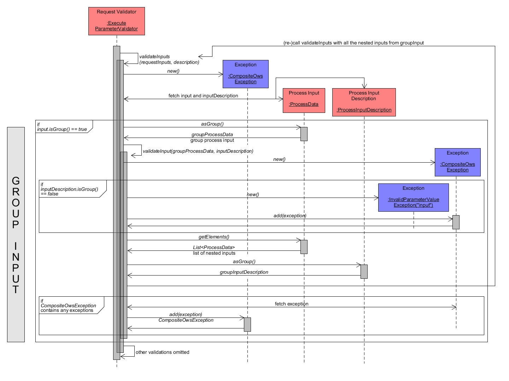
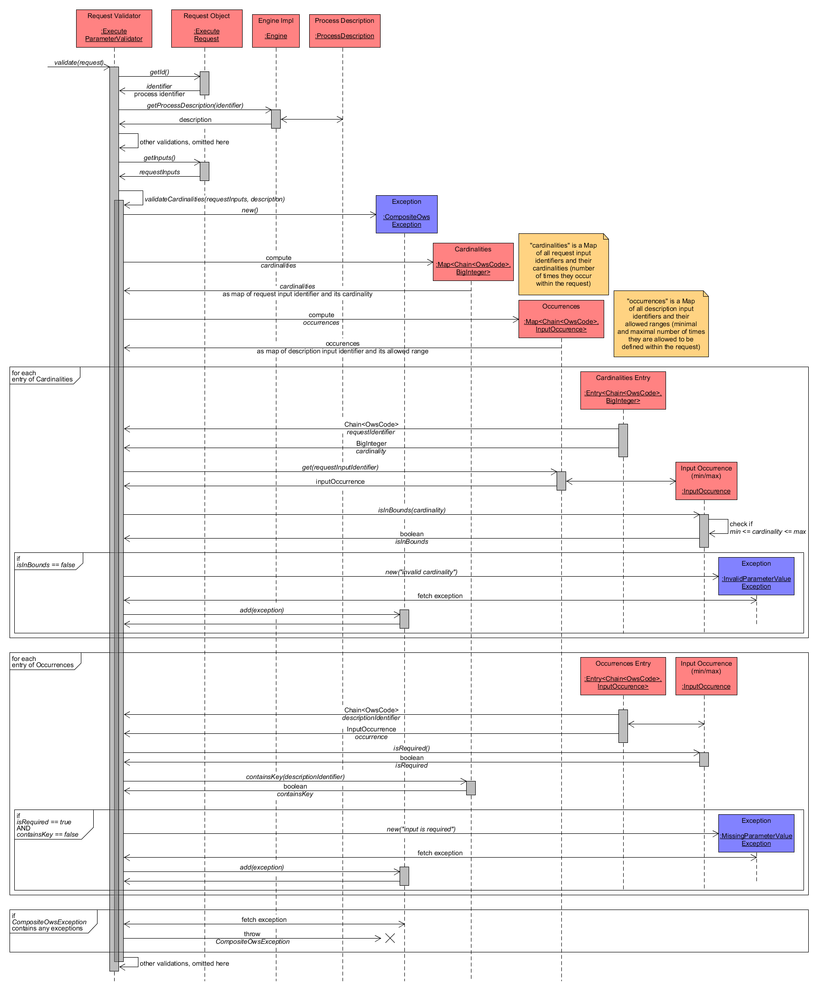

JavaPS Documentation - Workflow of WPS 2.0 Operations
Workflow of WPS 2.0.0 Operations
Within the following sections the workflow of each operation of the WPS 2.0.0 standard that is supported by JavaPS is introduced in detail. Each description begins with a coarse workflow overview of the operation, then focuses request validation and finally presents the request handling in detail. With regard to the request validation, JavaPS only comprises validating components that check each request object for WPS specific parameters. As Iceland is a generic service infrastructure for numerous OCG Web services, it also performs the basic check of the standard parameters "service", "version" and "request". In particular, the value of the "request" parameter indicates, which WPS operation is requested and thus which ValidationHandler and OperationHandler components are used. In the following, the operations GetCapabilities, DescribeProcess, Execute, GetStatus, GetResult and Dismiss are focused.
Throughout all sequence diagrams the UML sequence diagram notation is used. In addition, the colours (blue and red) of the participating application components indicate their membership within either JavaPS or Iceland. While blue components belong to Iceland, red components are offered by JavaPS.
GetCapabilities
GetCapabilities - Basic Workflow
Within the GetCapabilities operation the service capabilities of the WPS instance are retrieved. The subsequent diagram shows the coarse workflow between the participating system components for a GetCapabilities GET request. JavaPS uses KvpBinding to parse the request as a GetCapabilitiesRequest, validates the request with the help of GetCapabilitiesParameterValidator and request handling is done by GetCapabilitiesHandler. The latter returns a GetCapabilitiesResponse object including the retrieved capabilities.
GetCapabilities Workflow coarse
GetCapabilities - Request Validation
As of January 2017 there is no validation code for GetGapabilities operation.
GetCapabilities - Detailed Request Handling
To highlight the request handling workflow the subsequent diagram focuses only the handle() method of the GetCapabilitiesHandler. To increase response time of GetCapabilities requests against the WPS, Iceland and JavaPS make use of a caching mechanism that holds the capabilities information within the memory for rapid access. Hereby, the capabilities information is extracted from the actual data source from time to time to keep the cached data up to date. When answering a GetCapabilities request, the data is directly read from the cached information and used to create the response object without accessing the actual data source.
The main tasks of the GetCapabilities request handling are:
- use the GetCapabilitiesRequest object to create a GetCapabilitiesResponse object and set basic information about service ("WPS") and version (e.g. "2.0.0").
- then inspect the GetCapabilitiesRequest object for the requested sections (filter for contents) and locale (language). Available sections are:
- ServiceIdentification - information about the WPS itself
- ServiceProvider - information about the provider offering the WPS
- OperationsMetadata - information about the supported operations and bindings
- Languages/Locales - information about available languages
- Contents - information about processes offered by the WPS
- for each of the above listed Capabilities sections the application inspects whether it is requested, and if so, extracts that information from the cached data. The sections ServiceIdentification, ServiceProvider and Languages/Locales are stored within the ServiceMetadataRepository. The OperationsMetadata is extracted from the RequestOperatorRepository and the available processes are extracted from the Engine. The Engine is a central component of JavaPS to manage jobs and processes and control their execution as well as persistence of job results. Each available process is represented by an instance of ProcessOffering. The available processes are returned as Set\<ProcessOffering>, from which a new instance of ProcessOfferings is created.
- as Iceland is a generic abstract framework for arbitrary OGC Web services it offers the component OwsCapabilities to include common Capabilities information. Hence an instance of OwsCapabilities is created from all requested section objects except the WPS specific ProcessOfferings.
- finally, a new instance of WPSCapabilities is created from OwsCapabilities and ProcessOfferings, which is set within the GetCapabilitiesResponse and returned.
GetCapabilities Workflow - handleRequest detailed
DescribeProcess
DescribeProcess - Basic Workflow
The DescribeProcess Operation is used by clients to retrieve the process description of a certain WPS process. The subsequent diagram shows the coarse workflow between the participating system components for a DescribeProcess GET request. JavaPS uses KvpBinding to parse the request as a DescribeProcessRequest, validates the request with the help of DescribeProcessParameterValidator and request handling is done by DescribeProcessHandler. The latter returns a DescribeProcessResponse object including the requested process description.
DescribeProcess Workflow coarse
DescribeProcess - Request Validation
Validation of a DescribeProcess request is done by DescribeProcessParameterValidator and visualized in the diagram at the end of this section. Basically, a request has to contain the parameter "identifier". Its value might be a reference to a single identifier of the associated process or a list of references to multiple processes or it may be the word "ALL" to request all process descriptions from the WPS. Hence, during validation, the DescribeProcessRequest object is analyzed for the existence of the required parameter. If it does not exist or is an empty value, a MissingParameterValueException is immediately thrown. Otherwise, each individual parameter value has to be checked. Before that an empty CompositeOwsException is created, which is used to collect any exception that might occur when checking each identifier value. Validating a single identifier value is split in two checks. First, if the identifier value is a NULL object, then a MissingParameterValueException is added to CompositeOwsException. Second, the parameter value must reference an existing process within the WPS instance. To verify this, the Engine component is asked whether it contains an associated process description. If not, an InvalidParameterValueException is added to CompositeOwsException. Finally, as soon as each identifier has been checked, the CompositeOwsException object is analyzed. If it contains any exception, it is thrown as the request contained invalid or missing parameter values. If it empty, then validation was successful and the actual operation handling can be continued.
DescribeProcess Request Validation
As indicated by the notes within the diagram, the upper description of the validation process have been simplified. Actually, Java Lambda expressions and Optional objects are used when creating an Exception first that are afterwards investigated to transfer any Exception to CompositeOwsException. For reasons of simplicity, the sequence diagram displays these steps in a different way.
DescribeProcess - Detailed Request Handling
The subsequent diagram highlights the request handling of the DescribeProcess request. Basically, the process identifier is extracted from the DescribeProcessRequest and used to acquire the associated process description as ProcessOffering. JavaPS organises available processes as child classes of interface IAlgorithm. Hence, a process is an IAlgorithm that has a process description as property and an execute() method to run the algorithm.
In more detail, the following tasks are performed:
- extract process identifier from DescribeProcessRequest
- call getProcessDescription() method from Engine. Within this method, the Engine contacts the RepositoryManager to find a suitable AlgorithmRepository, from which the ProcessDescription is retrieved.
- an instance of ProcessOffering is created using the ProcessDescription as parameter.
- eventually a DescribeProcessResponse object is created from service ("WPS") and version (e.g. "2.0.0") and the ProcessOffering and returned.
DescribeProcess - handleRequest detailed
Execute
Execute - Basic Workflow
In contrast to the previous WPS GET operations examples, the Execute operation is demonstrated using HTTP POST and POX binding. With regard to the coarse workflow, the PoxBinding component parses the request as ExecuteRequest within the doPostOperation() method. The request is validated by ExecuteParameterValidator, which performs a lot more checks compared to all other WPS operations as explained below. After validation, the ExecuteHandler processes the request and returns an ExecuteResponse. In short, a new Job instance is created that is executed synchronously or asynchronously. While in the first case (synchronous execution), the response contains the computed result(s), the latter case includes a status info document within the response.
Execute Workflow coarse
Execute - Request Validation
Validation of an Execute requires much more steps compared to all other WPS operations. An Execute request comprises the following parameters:
- identifier: the identifier of the process to be executed
- input: one or more input definitions as process inputs. Hereby, inputs may be mandatory or optional and their cardinality (minimum and maximum occurrences) may be different. Also an input is defined using a certain format. The input value can be specified directly or might be given as a reference to a resource that must be fetched by the WPS first.
- output: one or more output definitions as process outputs. Similar to the input definition, outputs may be mandatory or optional, uses a certain format and can be offered as value or as reference (URL to external resource).
- mode: the execution mode, whose value indicates synchronous or asynchronous process execution.
- response: the response format, whose value indicates whether outputs shall be encoded as formal response document or as raw output.
In short, the validation of an Execute request comprises the following checks:
- validation of process identifier: is it missing or does it address a non-existent process?
- validation of response mode in combination with requested outputs: if it is set to RAW, then only one single output can be requested.
- validation of inputs: does input identifier point to an existing input of the selected process? Is the input content defined correctly with regard to its description?
- validation of outputs: does output identifier point to an existing output of the selected process? Is the output content defined correctly with regard to its description?
- validation of cardinalities: in general a process might require certain mandatory inputs. Also a process may restrict the number of certain inputs to a lower and upper boundary. Hence this check looks for missing mandatory inputs and inspects the numbers of included inputs.
The following sequence diagrams and sub-sections visualize these main steps. First a coarse overview is presented. Afterwards the validations of inputs, outputs and cardinalities are focused in more detail separately.
Coarse Overview of Execute Request Validation
Validation is performed by ExecuteParameterValidator. Each individual step of the validation process may cause a certain Exception. Thus, as first step, a generic CompositeOwsException object is created, which is supposed to hold one ore multiple occurring Exceptions to throw them as a composed object.
Then the process identifier is extracted from the ExecuteRequest. If it is missing, then a MissingParameterValueException for parameter identifier is created and added to CompositeOwsException. Afterwards, the Engine component is used to retrieve the ProcessDescription associated to the process identifier. If not description object can be found, an InvalidParameterValueException for parameter identifier is created as the identifier does not point to an existing process within the WPS.
Once a ProcessDescription is identified the validate(request, description) method is called to analyse the remaining request parameters. Again, a new CompositeOwsException object is created to collect any occurring exceptions. As next check, the parameters responseMode and output definition are extracted from ExecuteRequest for investigation. If responseMode is set to "RAW", then only one single output must be defined. If that condition is violated (e.g. none or more than one output is requested) than a InvalidParameterValueException for parameter responseMode is added to CompositeOwsException.
Next, the input definitions of ExecuteRequest are validated according to their individual input description. This will be explained in section Input Validation in detail.
Similarly, the output definitions of ExecuteRequest are checked for validity according to their individual output description. This is described in detail in section Output Validation in detail.
Last, the cardinalities of in- and outputs analysed, which is highlighted in section Cardinality Validation in detail.
If any Exception has been created during the validation process (due to incorrect request parameters), it is collected within CompositeOwsException instances. Should they contain any Exception, they are ultimately thrown and validation fails. Otherwise (no error/exception occurred), validation succeeds and the actual processing of the ExecuteRequest may continue.
Execute Request Validation
Input Validation in detail
In this section the validation of the inputs within an ExecuteRequest is described as depicted in the following diagram. While the diagram repeats some general validation steps related to inputs, other steps are completely omitted.
With regard to input validation, the ProcessDescription as well as the inputs (where each input is represented by a single Java component ProcessData) are required. The validateInputs() method takes both as arguments and first creates a CompositeOwsException to collect possible InvalidParameterValueExceptions.
Then each ProcessData input is validated individually within the method validateInput(). Its inputIdentifier is used to find the associated ProcessInputDescription that e.g. holds definitions of allowed formats or restrictions like allowed input values. During validation, the ProcessData input from the request is checked for compatibility with its formal description. If no associated ProcessInputDescription can be found, an InvalidParameterValueException for the input identifier is added to CompositeOwsException.
An Execute input can be of three types, value input (value is directly provided within definition), reference input (input only defines an URI where the value can be obtained) or group data (for nested input definitions). Depending on its type, the validation of each ProcessData input differs. As the continuing validation for each type comprises multiple sub-tasks, their description follows in separate diagrams below.
Finally, the CompositeOwsException is inspected for any containing Exceptions that have to be thrown.
Execute Request - Input Validation
Group Input Validation
In the following, the validation of a group input within the method validateInputs() of ExecuteParameterValidator is focused. A group input comprises multiple nested input definitions. Hence, the ProcessData is processed as GroupProcessData and also the ProcessInputDescription has to be the description of a group input, which is checked by calling its method isGroup(). If that is false (input is group but description is not), then an InvalidParameterValueException for the input is added to CompositeOwsException. Otherwise, the list of nested inputs is fetched from GroupProcessData and the ProcessInputDescription is turned into a GroupInputDescription via asGroup(). Next, the method validateInputs() of ExecuteParameterValidator is re-called with the list of nested ProcessData inputs and the GroupInputDescription as parameters. Again, each nested input may be of type value input, reference input or group input. Validation of the first two are described below.
Execute Request - Validation of Input as Group
Reference Input Validation
Subsequently, the validation of a reference input is demonstrated. The input should contain a URI to the resource containing the actual value and specify a valid format for its value. The ProcessData input is thus interpreted as ReferenceProcessData. Within the validateInput() method a new CompositeOwsException is created to collect possible Exceptions. Next, the URI is extracted from ReferenceProcessData via getURI(). If it is equal to NULL, an InvalidParameterValueException is added to CompositeOwsException. Otherwise the specified format has to be validated within validateFormat(). As this comprises multiple sub-tasks, it is described together with the validation of Value Inputs below. After that, if CompositeOwsException contains any Exceptions, then it is thrown.
Execute Request - Validation of Input as Reference
Value Input and Format Validation
Here, the ProcessData input is treated as a ValueProcessData that directly contains the input value. The only validation required is the validation of the input format within the method validateFormat(). The remaining steps are equal to group inputs or referenceInputs and are omitted here.
Execute Request - Validation of Input as Value
The following diagram finally presents the validation of the input format. Again, at the top of the diagram, some necessary steps from previous validation steps are included to show the context of the validateFormat() method. However the description of these tasks is omitted here as it was already described before.
The explanation focuses the tasks of the validateFormat() method. First, the Format is fetched from ProcessData input. Two checks have to be performed to confirm validity of the Format. First, it must not be empty() and second, its value must match a supported format of the selected process. To verify the latter, a new instance of InputFormatValidator is created using the ProcessData as parameter. As an input may be of type literal, complex, bounding box or group, it offers associated visit() methods that take the ProcessInputDescription as parameter to compare the Execute request input to its formal definition/description. Next, the method visit() of ProcessInputDescription is called with the InputFormatValidator as parameter. Depending on the input type it delegates the validation to the appropriate visit() method of InputFormatValidator. There, all allowed/accepted formats for the current ProcessData input are retrieved and compared to the Format of the investigated input. If there is no match, the format specified by the Execute input is not accepted and hence an InvalidParameterValueException is added to CompositeOwsException. Otherwise, the input Format is successfully validated.
Execute Request - Validation of Input Format
Output Validation in detail
The process of validating the Execute request output definitions is similar to the validation of request inputs. The first method calls again show, how the ProcessDescription is fetched from the Engine with help of the process identifier extracted from the ExecuteRequest. This section focuses the validateOutputs() method that takes the OutputDefinitions and ProcessDescription as parameters. On the left side of the diagram, vertical grey bars indicate what task is performed at the associated method calls. So basically, OutputDefinitions are checked for duplicates and afterwards, their Format definitions have to match a supported Format for each output. The relevant steps are described in more detail as follows.
First, a new instance of CompositeOwsException is created to collect later Exceptions. Then the list of OutputDefinitions is checked for duplicates by comparing their output identifiers. If the same output was delivered more than once, an InvalidParameterValueException is added to CompositeOwsException.
Afterwards, each OutputDefinitions is validated individually. Its output identifier is used to retrieve the associated ProcessOutputDescription from ProcessDescription. If no such description can be found then the requested output does not exist and an InvalidParameterValueException is added to CompositeOwsException. In general, an OutputDefinition may be a group output containing nested OutputDefinitions or a single OutputDefinition. If it is a group input then the whole validation process has to be redone for the nested outputs by re-calling validateOutputs() with the nested OutputDefinitions and the description as parameters. Otherwise, the single OutputDefinition is validated through verification of a matching Format. As the process of validating an output Format is more or less identical to the validation of an input Format the description is omitted here. It was already described in the final paragraphs of section Input Validation in detail.
Execute Request - Output Validation
Cardinality Validation in detail
As final step of validating an Execute request, the cardinalities of the inputs have to be checked. In general, each WPS process defines one or more inputs, each having a certain range of occurrences within a single Execute request specified by a minimum and maximum number. At the same time, inputs might be mandatory or optional. E.g., a process to compute a buffer geometry requires a "distance" attribute and one ore more "input geometries" to buffer. While both inputs are mandatory (as the algorithm/process creates buffer geometries for each "input geometry" using the specified "distance"), a third optional input, let us name it "annotation", could be specified by the user in order to attach a text value as annotation for each created buffer geometry. However, in contrast to the mandatory inputs, the user may also leave this optional input out of the request.
Concluding, the validation of input cardinalities must verify two main conditions:
- Check if the specified request inputs comply to their allowed range of occurrences.
- Check if any mandatory/required input is missing within the request.
The ProcessDescription objects holds the necessary ProcessInputDescriptions to perform these verifications. Within the subsequent diagram, the necessary validation steps are depicted. The beginning method executions again show the context of the validateCardinalities() method and show, how required Java components are prepared.
As first step, like within all the other validations, a new instance of CompositeOwsException is created to collect any Exceptions. Then two basic Java Map objects named Cardinalities and Occurrences are computed (for simplicity, their computation has been omitted within the diagram). With respect to the Cardinalities, each ProcessData input from ExecuteRequest is visited and its number of occurrences is counted. Thus, Cardinalities maps the identifier of each request input to its factual number of occurrences. In contrast to that, Occurrences analyses the ProcessInputDescription of each input defined for the WPS process and maps its identifier to a component named InputOccurrence, which represents the minimum and maximum number of times this input may occur within a request. Summing it up, while Cardinalities holds the factual number of occurrences for each input (the so-called cardinality), Occurrences stores the allowed number of occurrences.
The next step is to iterate over each entry of Cardinalities and check if its cardinality is valid. For this reason, the associated InputOccurrence of Occurrences is retrieved (linked through the same map key input identifier). Its method isInBounds() checks if the factual cardinality is within the range of allowed occurrences (between min and max) and return a boolean value. If the factual cardinality is out of bounds (isInBounds() return false) then an InvalidParameterValueException is added to CompositeOwsException.
As final validation, the code iterates over each entry of Occurrences in order to identify whether all required/mandatory inputs are defined within ExecuteRequest. Each InputOccurrence object is checked if it isRequired() (its min value is > 1). If so, the Cardinalities map is checked to contain an entry with the same input identifier as key. Should there be any missing mandatory input (Cardinalities does not have a matching entry for the input identifier), then a MissingParameterValueException is added to CompositeOwsException.
If any Exception has been added to CompositeOwsException during the validation process it is thrown. Otherwise validation succeeded with no errors.
Execute Request - Validation of Input Cardinalities
Execute - Detailed Request Handling
To concretize the handling and processing of an ExecuteRequest, the handle() method of the ExecuteHandler is inspected in more detail:
- all necessary parameters are extracted from the ExecuteRequest. This includes:
- service: "WPS"
- version: e.g. "2.0.0"
- process identifier: the identifier of the process to be executed
- inputs: the list of inputs for the selected process
- outputs: the list of outputs for the selected process
- response mode: either "document" to receive an ExecuteResponse including a complete ResultDocument according to the WPS standard or "raw" to request one single raw output without a formal ResultDocument structure.
- execution mode: either "async" for an asynchronous execution, which will produce a ExecuteResponse with an embedded status info document or "sync" for a synchronous execution that first completes execution of the process/job and then includes the computed result(s) within the ExecuteResponse.
- the method execute() of Engine is called with process identifier, inputs, outputs and response mode as parameters. This will cause the Engine to create a new Job instance to be executed. Its associated job identifier is returned to ExecuteHandler.
- depending on the parameter execution mode ("sync" or "async"), the subsequent processing differs. Both cases are described subsequently:
- case sync: in short, the processing waits for the Job to complete and retrieves the Result object that includes all computed outputs to return them along with the ExecutionResponse. If in addition the parameter response mode is set to raw, then only one output is extracted from the Result as instance of ProcessData. From this ProcessData output the content/media type is extracted and set within the ExecuteResponse, which is then returned.
- case async: in contrast to the previous case, JavaPS does not wait for the Job execution to complete. Instead, only the status of the Job is fetched via the getStatus() method. It uses the parameter job identifier to locate the Job, from which its status is retrieved as StatusInfo. Afterwards the StatusInfo is embedded within the ExecuteResponse and returned.
Execute Workflow - handleRequest detailed
To complete the description of the Execute operation, the next diagram focuses the execution of a Job. In the previous diagram, this step was simplified and only showed that a Job instance was created, whose execution produces a Result object containing all requested outputs as ProcessData. Hence, a more detailed description of the necessary processing steps is given below:
- when the Engine is called via the execute() method, it first has to retrieve the IAlgorithm implementation that is associated to the process identifier. For this reason, it delegates the retrieval to the RepositoryManager that locates the AlgorithmRepository containing the IAlgorithm implementation for the process identifier.
- from the IAlgorithm implementation, its ProcessDescription is used to decode the inputs as ProcessInputs with the help of ProcessInputDecoder. More information about the decoding of process inputs is provided in section Binding and Data Handlers for Data Representation/Transformation of Process In- and Outputs of a separate guide about Algorithm definitions and the creation of an External Processing Repository.
- next, the JobIdGenerator component is called to create() a new unique job identifier. Once done, a new Job instance is created as Future object using the parameters algorithm, job identifier, inputs, outputs and response mode.
- the Job instance is submitted to the ExecutorService, which is a component that manages and triggers job execution. As the Job is also a Future object it can be queried for information such as its status at any time. Only the Result cannot be retrieved right away, since that has to be computed before. However, any Future object offers a get() method, which will wait, if necessary, to complete the execution and then return the result. The Engine now adds the Job to its class property maps cancelers and jobs and return the job identifier to the ExecuteHandler.
- depending on the execution strategy the ExecutorService will run() the execution of the Job eventually. The Job's status is updated to running and the IAlgorithm implementation is triggered to execute() the process.
- IAlgorithm implementation performs the process-specific steps to compute the outputs. These outputs are then properly encoded with the help of ProcessOutputEncoder and set as property nonPersistendResult of the Job. The Job's status is set to succeeded. Of course, if any error occurred during process execution, then processing is aborted and the status is set to failed instead.
- After successful job completion, the Engine is informed via onJobCompletion() to save() the Job information including its status and result (outputs), e.g. on the local hard drive of the server hosting the WPS. Here, the component ResultPersistence is used to persist the information.
- the Engine removes the Job from its class property maps cancelers and jobs and retrieves the persisted Result from ResultPersistence to return it to the Job.
- the Job sets the Result and executes any listeners that are registered for the event.
Execute Workflow - Job Execution detailed
GetStatus
GetStatus - Basic Workflow
The aim of the GetStatus operation is to retrieve the current status of the job with the submitted job identifier. The following coarse workflow diagram shows an exemplar GetStatus GET request. The request is parsed by KvpBinding as a GetStatusRequest. Validation is performed by JobIdParameterValidator, which checks whether a parameter named jobId exists whose value can be resolved to an existing job identifier within the WPS. Subsequently, the GetStatusHandler performs the actual request handling to retrieve the current job status and return it within a GetStatusResponse.
GetStatus Workflow coarse
GetStatus - Request Validation
As indicated in the lower diagram, the component JobIdParameterValidator performs validation of a GetStatus request object. In particular, it extracts the parameter jobId from the request object and checks the following conditions:
- jobId is a NULL object
- the value of jobId is a NULL object
- the value of jobId is an empty object
If any of these conditions is true, then a MissingParameterValueException is thrown, as the request does not specify a jobId parameter value at all. Otherwise, the jobId value specified within the request object is checked for validity. In particular, the Engine is asked whether it contains a Job instance associated to the jobId. If not, an InvalidParameterValueException is thrown. When not exception was thrown, then the jobId does point to an existing Job and validation was successful.
GetStatus Request Validation
GetStatus - Detailed Request Handling
The details of the handle() method of the GetStatusHandler are demonstrated in the next diagram. The following sub-tasks are performed:
- From the GetStatusRequest object the parameters service, version and jobId are extracted. The latter is an identifier pointing to the Job instance that has to be present within the WPS.
-
The method getStatus() from Engine is called with jobId as parameter. Depending on the existence of a Job instance with the specified jobId within engineInstance.jobs, the workflow differs as described below. For one, the job might exist within the memory (e.g. when the job is currently executed or has only been accepted but is not running yet) and hence the job information can directly be retrieved from the Job instance. Otherwise the job information has already been persisted (e.g. because the job was finished) and hence has to be retrieved using ResultPersistence, which retrieves the required information from the persisted resource.
- Job exists within engineInstance.jobs and thus exists in memory:
- the method getStatus() of the existing Job instance with identifier jobId is called. Within this method, a new StatusInfo object is created and filled with relevant information like job identifier.
- from the Job instance, the JobStatus object can be retrieved, which contains the requested status information. It is used to set the status property within StatusInfo.
- Depending on the JobStatus, additional information has to be set within StatusInfo. If the JobStatus is accepted or running, then the properties estimatedCompletion (date of estimated completion of job), percentCompleted and nextPoll (information for clients when to re-request the status) are set. Else if the JobStatus is succeeded or failed, no additional information is added to StatusInfo. Actually, the code suggests that an expiration date (indicated when the job information is deleted) has to be computed and set, but as of 12.12.2016 there is no implementation yet.
- the StatusInfo object is then returned and forwarded to GetStatusHandler.
- Job information has been persisted:
- here, the job has already finished and its information like status or results have been previously persisted (e.g. as a JSON file). Hence, this information has to be retrieved from the persisted resource using ResultPersistence. In consequence, its method getStatus() is called using the jobId as parameter.
- the relevant job metadata and expiration date are loaded from the persisted job resource via getJobMetadata(jobId) and getExpirationDate(jobId).
- a new instance of StatusInfo is created and instantiated with the parameters jobId and expiration date.
- a new JobStatus object is created from job metadata and also set within StatusInfo.
- finally, the StatusInfo instance is returned and forwarded to GetStatusHandler.
- Job exists within engineInstance.jobs and thus exists in memory:
-
A new GetStatusResponse is created using service, version and the retrieved statusInfo as parameters. This response object is then returned.
 GetStatus - handleRequest detailed
GetStatus - handleRequest detailed
GetResult
GetResult - Basic Workflow
A GetResult operation is used to retrieve the result(s) of the job with the submitted job identifier. The following coarse workflow diagram shows an exemplar GetResult GET request. The request is parsed by KvpBinding as a GetResultRequest and validation is performed by JobIdParameterValidator, which checks whether the parameter jobId points to an existing job identifier within the WPS. If so, the GetResultHandler performs the actual request handling and returns the requested output(s)/result(s) within a GetResultResponse.
GetResult Workflow coarse
GetResult - Request Validation
Similar to the validation of a GetStatus request, the component JobIdParameterValidator performs validation of a GetResult request object. Thus, the validation workflow is identical as already described in section validation of GetStatus request.
GetResult Request Validation
GetResult - Detailed Request Handling
Similar to the previous operation descriptions, the following diagram focuses the handle() method of GetResultHandler. In general, the required information is stored within the associated Job object, which may or may not have been persisted. If it has not yet been persisted, the result can simply be retrieved from the associated Job instance. Otherwise, the information has to be loaded from the persisted resource and the Result object has to be constructed from the scratch. Subsequently, both cases are described in detail. The handle() method comprises the following sub-tasks:
- The parameters service, version and jobId are extracted from the GetResultRequest object. The jobId is an identifier pointing to the Job instance that has to be present within the WPS.
-
The method getResult() from Engine is called with jobId as parameter. Depending on the existence of a Job instance with the specified jobId within engineInstance.jobs, the workflow differs as described below. For one, the job might exist within the memory (e.g. when the job is currently executed or has only been accepted but is not running yet) and hence the job information containing the Result can directly be retrieved from the Job instance. Otherwise the job information has already been persisted (e.g. because the job was finished) and hence has to be retrieved using ResultPersistence, which retrieves the required information from the persisted resource. Bot cases are highlighted in the following:
- Job exists within engineInstance.jobs and thus exists in memory:
- the Job object contains the Result object or, if the job is not yet finished, will compute it to guarantee its existence. Since the Job instance can directly be fetched from Engine, it is simply returned, as it contains the Result.
- Job information has been persisted after Job finished (succeeded or failed):
- here, the job information was previously persisted and thus has to be reloaded from the associated resource (e.g. a JSON file). Hence, the getResult() method of ResultPersistence is called with the jobId as parameter to refer to the right Job.
- ResultPersistence now creates a new instance of Result, which is subsequently instantiated with the relevant information from the persisted Job resource. First, the jobId is set.
- ResultPersistence loads the job metadata from the persisted resource and sets the following properties within the created Result object: expirationDate (date when the Job will permanently be deleted by the WPS), responseMode (possible values are either document for a formal response document or raw to request a single raw output without surrounding response document), jobStatus (possible values may be succeeded or failed according to WPS specification)
- if jobStatus equals failed, then the job execution was not successful. Hence, the errorMessage property is extracted from job metadata and used to throw a suitable Exception.
- otherwise (the job was executed without errors and jobStatus equals succeeded), the computed outputs of the Job have to be extracted and set within the Result object. For that reason, the property outputNodes is extracted from job metadata. Then a loop over each outputNode of outputNodes decodes the output information and creates a ProcessData instance for each outputNode. Depending on the output type (possible types are literal, complex or boundingBox according to WPS specification) and transmissionMode (possible modes are value or reference according to WPS specification) the ProcessData may represent a value output, a reference output or a group data output.
- after each ProcessData output is set within Result it is returned to GetResultHandler.
- Job exists within engineInstance.jobs and thus exists in memory:
-
GetResultHandler creates a new instance of GetResultResponse using service, version and result as parameters and returns it.
GetResult - handleRequest detailed
Dismiss
Dismiss - Basic Workflow
The Dismiss operation is used to cancel an accepted or running job. A Dismiss GET request is parsed by KvpBinding as a DismissRequest. Validation is performed by JobIdParameterValidator that checks whether a parameter named jobId exists and whether its value can be resolved to an existing job identifier within the WPS. Subsequently, the DismissHandler processes the request to cancel the specified job if possible and returns a DismissResponse, which includes the jobs Status Info document.
Dismiss Workflow coarse
Dismiss - Request Validation
Similar to the validation of a GetStatus and GetResult request, the component JobIdParameterValidator performs validation of a Dismiss request object. Thus, the validation workflow is identical as already described in section validation of GetStatus request.
Dismiss Request Validation
Dismiss - Detailed Request Handling
Again, more detailed information about the sub-tasks within the handle() method of DismissHandler are explained in the following:
- the necessary parameters of the DismissRequest are extracted, including service ("WPS"), version (e.g. "2.0.0") and jobId.
- after that the Engine is informed to dismiss() the job with the extracted jobId. For this reason, the Engine retrieves the Job and at the same checks whether the job is available as Cancelable. Here, it has to be considered that the Engine manages jobs within multiple class properties, for one the Job instances within a ConcurrentHashMap
- in consequence, if a job is available as Cancelable, then its cancel() method is called to abort its execution. A boolean value indicates whether this event was successful. The subsequent section shows an process algorithm example to clarify how an accepted or running job is dismissed.
- the JobStatus of the Job instance with identifier jobId is retrieved and forwarded to the DismissHandler.
- finally, a new DismissResponse instance is created from service ("WPS"), version (e.g. "2.0.0") and JobStatus. Hence the response object contains the status info document of the dismissed job.
Dismiss - handleRequest detailed
Cancelling an accepted or running Job via Dismiss - an Example from the Developer Perspective
Cancelling a job before it completes its computation is a key aspect of the WPS specification. As shown in the previous section, the Dismiss operation triggers the WPS server to cancel() the execution of a certain Job.
As explained in section Execute - Detailed Request Handling, when a Job is submitted to the ExecutorService that manages process/algorithm execution, a Future object is created and added as Cancelable to the Engines property engine.cancelers. A Future object comprises the method cancel(), which prevents the Future from executing if not already run or interrupts it if currently running. To be precise, if the execution has not started yet, a call to the cancel() method prevents the process from starting at all. When the process is already being executed, the cancel() method interrupts the thread, in which the Future is executed (compare Oracle Java Doc of Future). However, interrupting the thread does not stop the execution directly. Instead the developer of the process/algorithm code explicitly has to consider the interrupt state and check it manually in order to abort the execution.
E.g. the following Java code shows an example of an execute method that computes buffer geometries for a list of input geometries. Note that the definition of an Algorithm for JavaPS is explained in section How to add new Processes/Algorithms and thus not explained here. What is important to know is that in- and outputs of an Algorithm are stored as Java properties of the implementing class. Within a method annotated by @Execute the computation that is called when executing the associated Job is implemented. The code below only shows that method. The computation of all the buffer geometries is done within a for-loop that iterates over all input geometries. Within each iteration, the condition if (Thread.currentThread().isInterrupted()) is called to check whether the thread has been interrupted. If so, then the computation should be aborted, e.g. by the simple statement return.
@Execute
/**
* This is an exemplary job execution to show how the
* "Dismiss" operation works and what a Developer has
* to have in mind when implementing the process
* execution method
*/
public void computeBuffer_dismissable() {
/*
* inputGeometries might be a huge number of geometries
* for which a buffer shall be computed
*/
List<Geometry> inputGeometries = this.data;
double radius = this.radius;
List<Geometry> bufferedGeometries = new ArrayList<Geometry>(inputGeometries.size());
for (Geometry geometry : inputGeometries) {
/*
* before computing the buffer for the current geometry
* check if the current thread was interrupted
*
* if so, then we must manually exit the computation and return!
*/
if (Thread.currentThread().isInterrupted())
return;
/*
* else continue computation
*/
else{
Geometry buffer = geometry.buffer(radius);
bufferedGeometries.add(buffer);
}
}
/*
* computation was successful and we set the output-property
* with the computed buffered geometries
*/
this.bufferedOutput = bufferedGeometries;
}
Hence, as a developer, you have to take care of properly quitting a running process in case the computation is cancelled via a Dismiss request. To do so, you have to check if (Thread.currentThread().isInterrupted()) where applicable. Otherwise, the execution would finish as the Futures cancel() method cannot stop it directly.